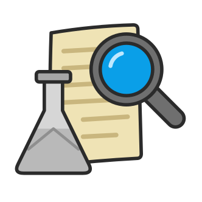

In your library, not in a project yet.
A click in the paper picks
Selecting words with the mouse works in every mode: a bar beside them adds a note, a highlight or an underline.
You decide what each colour means, e.g. yellow for passages with questions, green for ones worth quoting. They're the same in every paper of this project.
For web articles or anything without a PDF. Each line becomes a numbered line you can attach notes to.